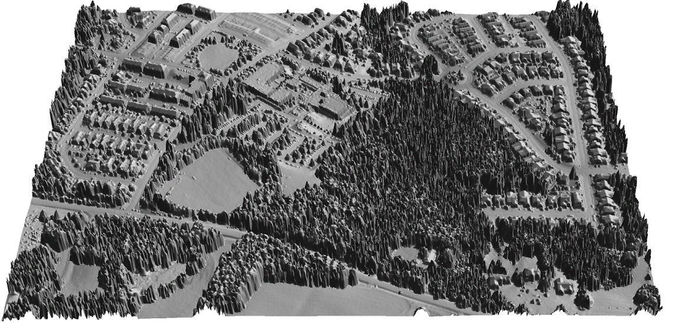
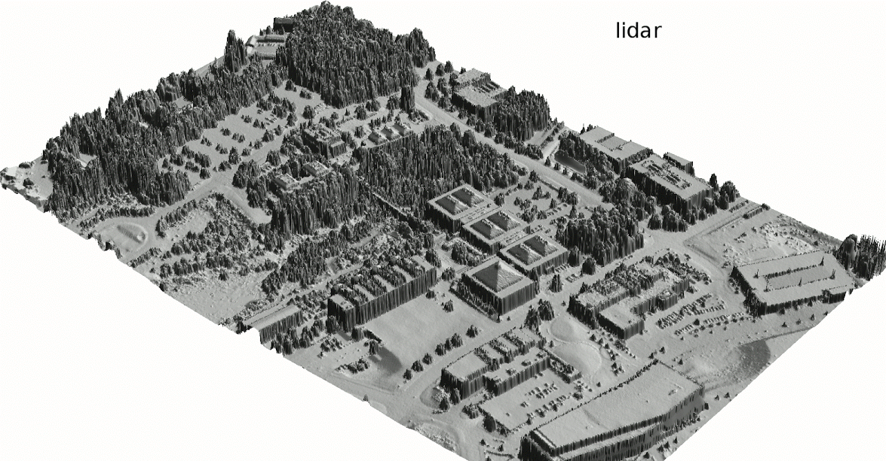
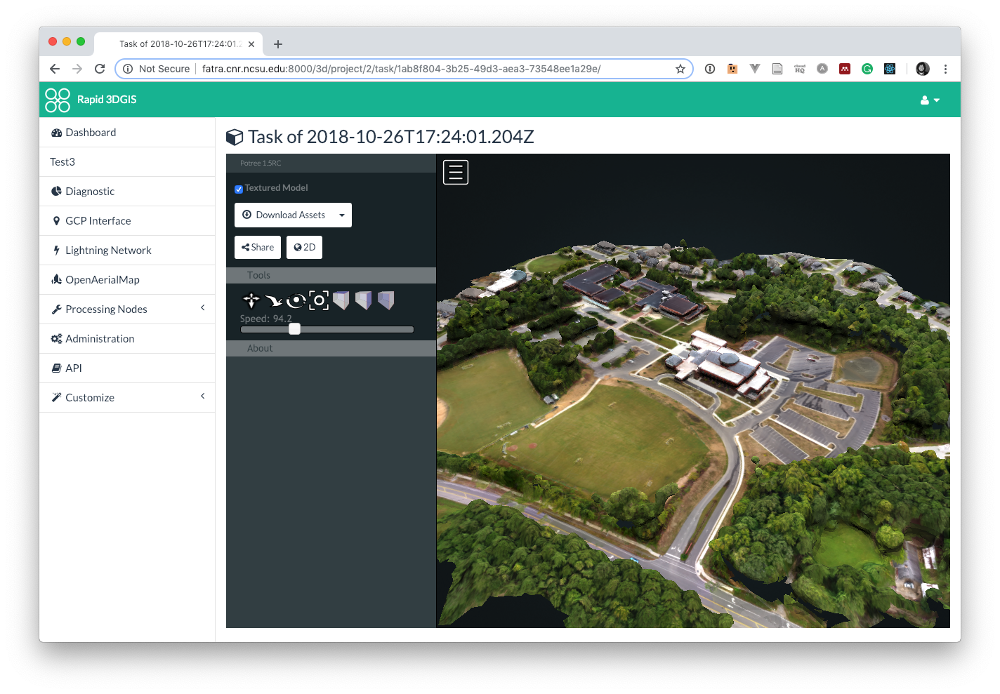

Smart and Connected Communities Projects
Helena Mitasova and Ross Meentemeyer
A. Petrasova, V. Petras, P. Tabrizian, J. Jeziorska


Overview
- Smart and Connected Communities RCN with TomorrowNow serious game
- Rapid 3DGIS updates with UAS
Smart and Connected Communities RCN
Research coordination network to support"Smart civic engagement in rapidly urbanizing regions"
- NSF seed funding to coordinate research with communities
- Lead: NCSU, co-PIs from UNC-CH, NCCU
- Partners: cities and towns in the Triangle region
Smart and Connected Communities RCN
Workshops to design an on-nline engagement system (i.e., a serious game) to support urban planning and resource management
- Communities connected by urbanizing stream networks
- Increasing risk of flooding, pressure on stormwater management infrastructures and transportation networks.
- New approach for researchers to engage with communities regarding
- Fast networks and computing resources could greatly enhance broad impact
Updating lidar DSM using UAS based SfM
- 2015 lidar updated with 2018 UAS data: forested area is replaced by a new school in Apex

Updating lidar DSM using UAS based SfM
2015 lidar updated with 2018 UAS data for area on Centennial Campus where two new buildings were built, trees cut and stormwater control is being updated

2015 lidar, UAS-based DSM is inserted, tilt identified and corrected
WebODM Plugin
2015 lidar, UAS-based DSM is inserted, tilt identified and corrected